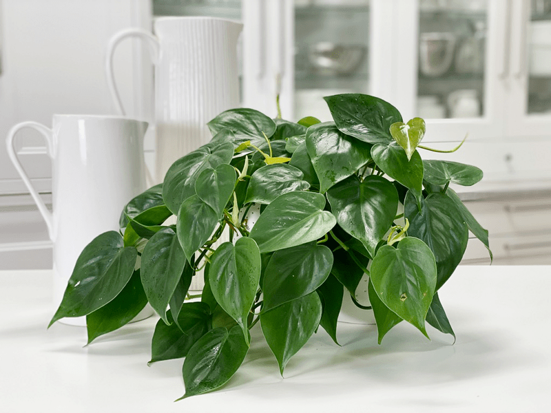
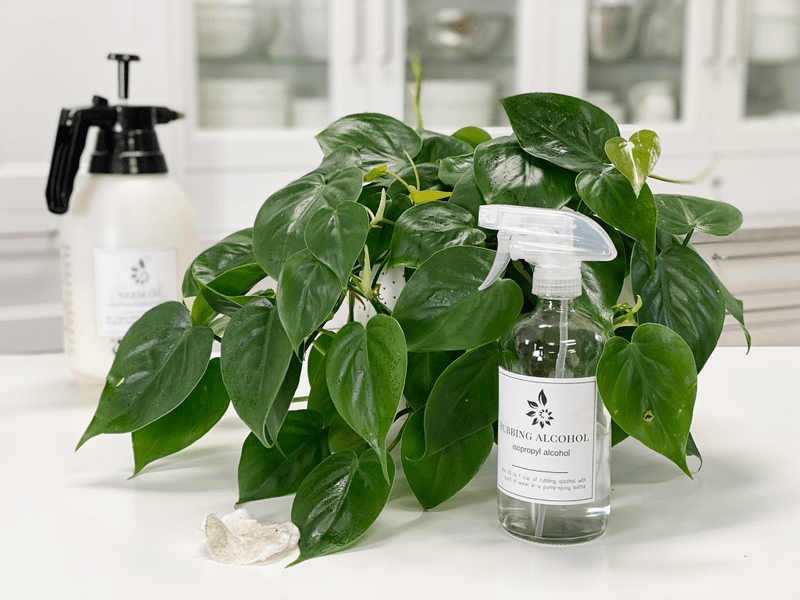
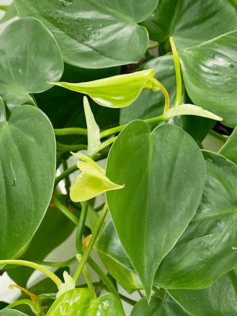

Philodendron Sweetheart | Care Difficulty – Easy
Vining heart-leaf philodendrons are often grown in hanging baskets that allow the thin stems and dark green, heart-shaped leaves to beautifully spill out of their container. They can live in a wide range of lighting and are not super thirsty. Like most plants, they do enjoy a good leaf cleaning, which helps with invasions of plant bugs and increases photosynthesis, which is required for growth. These houseplants can be trained to grow up a trellis are a pole, or can be displayed as a hanging plant. Did you know that there are over 200 different varieties of philodendron plants that come in different sizes, colors, and leaf shapes?

I found this plant at our local grocery store and it somehow found its way into my shopping buggy! As we were making our way to the checkstand, Bob was rambling off the grocery list to make sure we had gotten everything. Lettuce–check. Plant–check. Sweet potatoes–check. Plant–check! I often find really good deals and healthy plants there. Not always, but enough to keep me from going through withdrawals.
Water Requirements
Using a lightweight, well-drained potting medium will help ensure that your plant does not become too wet or waterlogged. While philodendrons prefer high humidity, they are capable of tolerating the low humidity levels of a typical household. I like to take all my plants to the kitchen sink and thoroughly soak the soil, allowing all the water to drain out. Make sure you water around the entire pot and not just in one area. Water more often in the growing season and reduce the frequency during the winter months.
Light Requirements
Philodendrons are versatile, hardy plants and are generally easy to care for in your home. Heart-leaf philodendrons enjoy bright diffuse light, but will tolerate a range of lighting conditions from diffused light to shade; just avoid direct sunlight, as this can burn the leaves.
Optimum Temperature
Most household temperature ranges are adequate for these indoor plants. Letting them remain in temperatures under 55℉ will stunt their growth. Avoid cold drafts and heat vents.
Fertilizer – Plant Food
Use a diluted solution of a complete liquid fertilizer every two weeks throughout the growing season. Do not fertilize during the winter months, since most plants go dormant in the colder months. Sometimes your indoor plants will grow all year long. If this is the case, fertilize them with a 1/4-strength diluted liquid fertilizer, or top dress the soil with worm castings or rich compost. If you overfeed your plants, they will let you know. Here are a few things to watch for:
-
Yellowing or browning leaves.
-
The top surface of the soil may be white or crusty.
-
The leaves of the plant will start dropping off.
-
The roots can begin to rot.
If you overfeed a plant, you can remove the houseplant from its current soil and repot it in fresh soil. This technique is undoubtedly the best way to get rid of the excess nutrients affecting your plant. Alternatively, you can flush the soil, which involves drenching the soil with water and letting it drain out. Repeat this several times to help the soil get rid of excess fertilizer.

Additional Care
-
Remove any dead, discolored, damaged, or diseased leaves and stems as they occur with clean, sharp scissors. Snip stems just above a leaf node; new growth will emerge from this cut.
-
Clean the leaves often enough to keep dust off of them. You can wipe the plant down regularly with diluted rubbing alcohol to deter insects from the plant.
-
About every six months, I like to give the plant some preventative treatments against the wildlife of plants (AKA bugs). I spray them down with a diluted rubbing alcohol solution, then wipe it off of each leaf with a clean cloth. After that, I spray it down with a neem oil solution. I will share all of this in another detailed post.
Plant Characteristics to Watch For
Diagnosing what is going wrong with your plant is going to take a little detective work, but even more patience! First of all, don’t panic and don’t throw out a plant prematurely. Take a few deep breaths and work down the list of possible issues. Below, I am going to share some typical symptoms that can arise. When I start to spot troubling signs on a plant, I take the plant into a room with good lighting, pull out my magnifiers, and begin by thoroughly inspecting the plant.

There are little yellow-green leaves under the leaf canopy.
- Yay! Let’s do a little dance! These are baby leaves making their way into the world!
The vines are leggy with small leaves.
The base of the plant is looking sparse.
-
If you allow the vines to grow long and never prune it, the top of the plant, in the pot, can become sparse.
-
Solution: If the base of the plant is looking sparse, it is time to trim the vines. Doing this will cause the plant base to become lusher. Cutting right after a leaf node (the place where the leaf is attached to the stem) will encourage the stem to branch out, giving you a fuller plant.
The leaves are soft and wilting.
-
Wilting is caused by dry soil.
-
Solution: Although the plant will quickly bounce back after a good drink, make sure to water it regularly. Frequent droughts can put the plant under a lot of stress.
The leaves are yellowing.
-
If the leaves are yellow, it is a sign that you may be overwatering your plant.
-
Solution: Allow the plant to thoroughly dry out. Then take the plant to the sink and water it until the soil is saturated. Make sure that the pot has drainage holes so the excess water can drain off. Failure to do this can led to root rot.
The leaves are turning brown.
- This is a sign of underwatering.
- Solution: Take the plant to the sink and drench the soil until the water is dripping from the drainage holes. If the water runs through the plant really fast, the roots most likely are not getting enough water. Check to see if the plant is rootbound (it may need a repotting). You can also poke holes in the soil to help aerate it. Water the plant again after doing that.
The leaves have brown, curling tips.
- Too much fertilizer can cause the leaf tips of your plant to brown and curl.
- Solution: Allow the soil to get more on the dry side, then flush the soil with water a few times. Be sure that it is potted in a planter that has drainage holes. Another possibility is to repot the plant with fresh soil.
Fungus gnats
-
Fungus gnats are harmless, except if you want to keep your sanity. They love to hang out in front of your face, testing your will and composure. They love wet, peaty potting mixes. You’ll find these tiny black fly-like insects crawling on the soil.
-
Solution: Check in on your watering habits. Keeping the soil too wet makes for a breeding ground for these gnats. There are several different treatments to help keep the population under control. Click (here) to learn more.
My plant is bushier on one side.
-
If your plant is bushier on one side, rotate the plant periodically to ensure even growth on all sides and dust the leaves often so the plant can photosynthesize efficiently. When dusting the leaves, also take the opportunity to inspect the undersides and keep an eye out for pests.
Common Bugs to Watch For
If you want to have healthy houseplants, you MUST inspect them regularly. Every time I water a plant, I give it a quick look-over. Bugs/insects feeding on your plants reduces the plant sap and redirects nutrients from leaves. Some chew on the leaves, leaving holes in the leaves. Also watch for wilting or yellowing, distorted, or speckled leaves. They can quickly get out of hand and spread to your other plants.
IF you see ONE bug, trust me, there are more. So, take action right away. Some are brave enough to show their “faces” by hanging out on stems in plain sight. Others tend to hide out in the darnedest of places, like the crotch of a plant or in a leaf that has yet to unfurl.
-

-
Mealybugs
-

-
Scales
-

-
Aphids
-

-
Spider mites
- Mealybugs look like small balls of cotton. They can travel, slooooooowly, but they have a strong will and determination! Though they are slow-moving, if any plant is touching another, there is a chance the mealybug will hitch a ride on a new leaf and spread. They breed like rabbits of the insect world. Females can deposit around 600 eggs in loose cottony masses, often on the undersides of leaves or along stems.
- Scales are dark-colored bumps that are primarily immobile insects that stick themselves to stems and leaves. They are rather inconspicuous and don’t look like a typical insect. They can range in color but are most often brownish in appearance. They’re called “scales” primarily due to their scale-like appearance on a plant, due to waxy or armored coverings. They are often seen in clumps along a stem, sucking away at the plant’s juices with their spiky mouthpart.
- Aphids are more commonly seen if you place your plants outdoors. Aphids are indeed bugs. They are tiny insects that, along with black, also come in shades of yellow, green, brown, and pink. They are often found on the undersides of leaves.
- Spider mites are more common on houseplants. They are not insects – they are related to spiders. These appear to be tiny black or red moving dots. Spider mites are nearly invisible to the naked eye. You often need a magnifying lens to spot them, or you may just notice a reddish film across the bottom of the leaves, some webbing, or even some leaf damage, which usually results in reddish-brown spots on the leaf.
Toxicity
If you have pets in the house, make sure your heart-leaf philodendron is place where curious paws will not be able to get to it. Philodendrons are toxic to pets; chewing on plants can cause oral pain, drooling, foaming, vomiting, and moderate to severe swelling of the lips, tongue, oral cavity, and upper airway. People can also have mild allergic reactions to the sap, resulting in an itchy rash.
© AmieSue.com